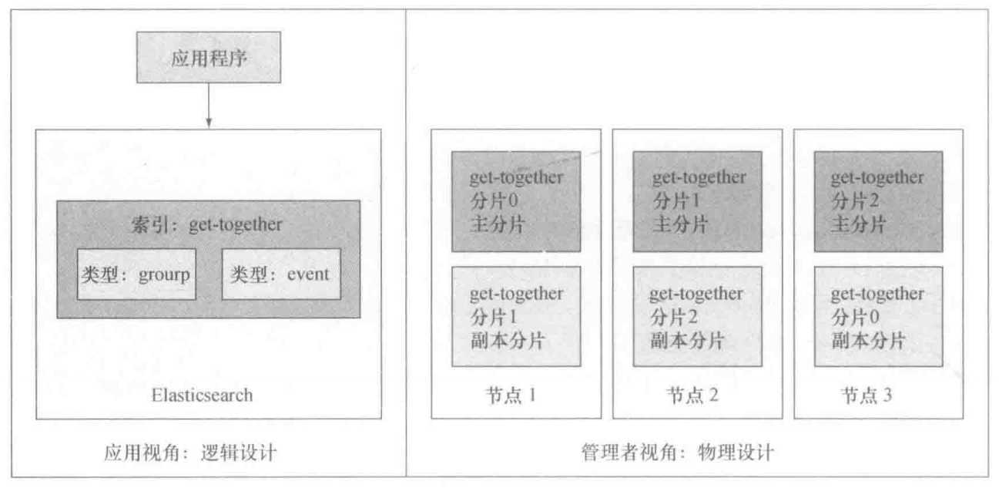
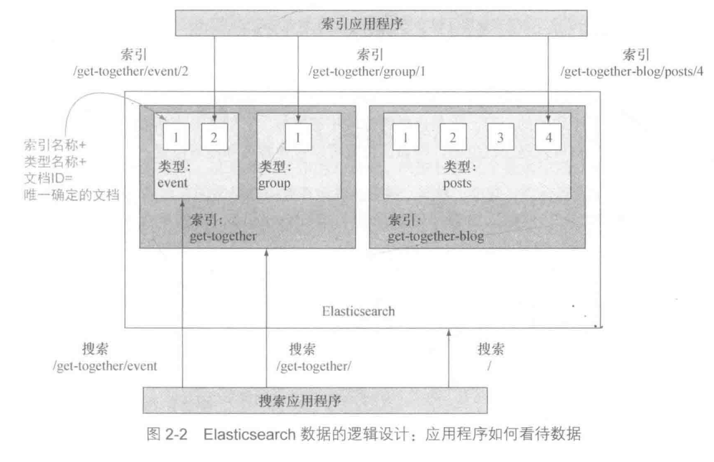
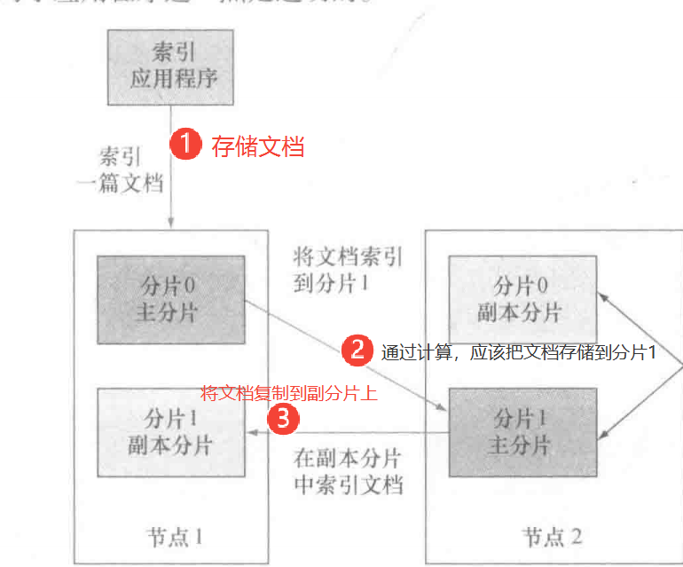
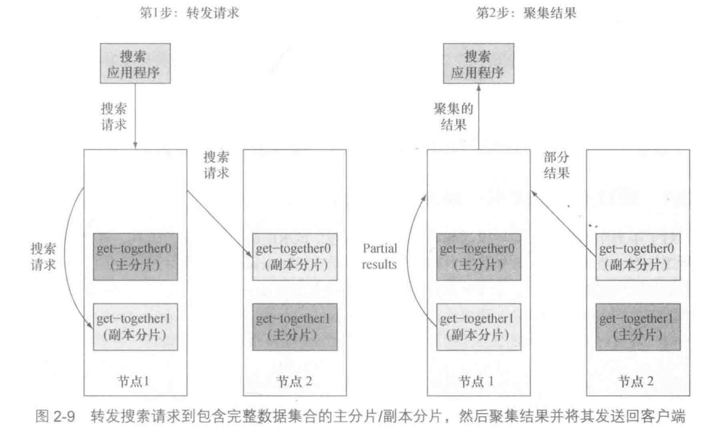
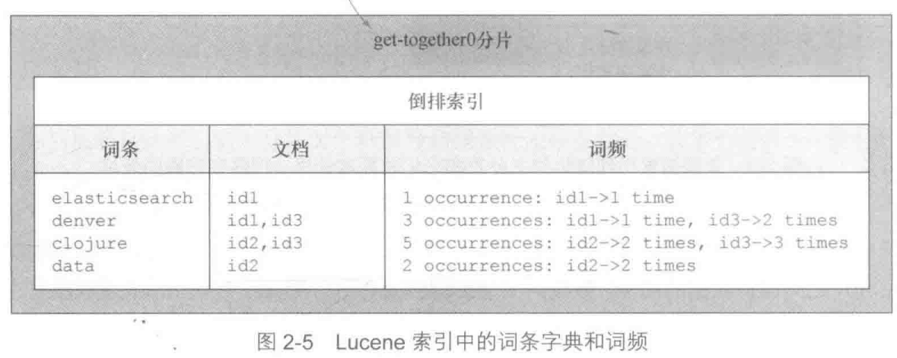

概览
为了理解Elasticsearch中数据是如何组织的，从以下两个角度来观察
- 逻辑设计
搜索应用所要注意的。用于索引和搜索的基本单位是文档，可以将其认为 文档以类型来分组，类型包含若干文档， 类似表格包含若干 行。 是关系数据库里的一行。 最终一个或多个类型存在于同一索引中，索引是更大的容器， 类似于SQL中的数据库
| ES | SQL |
|---|---|
| 文档 | 行 |
| 类型 | 表 |
| 索引 | 数据库 |
- 物理设计
在后台Elasticsearch是如何处理数据的。 Elasticsearch将每个索引划分为分片，每份分片可以在集群中的不同服务器间迁移。通常，应用程序无须关心这些，因为无论Elasticsearch是单台还是多台服务器，应用和Elasticsearch的交互基本保持不变。但是，开始管理集群的时候，就需要留心了。 原因是，物理设计的配置方式决定了集群的性能可扩展性和可用性

逻辑设计
这个索引一类型-ID的组合唯一确定了Elasticsearch中的某篇文档。当进行搜索的时候，可以查找特定索引、特定类型中的文档，也可以跨多个类型甚至是多个索引进行搜索。 
文档
- 无模式 Elasticsearch中的文档是无模式的，也就是说并非所有的文档都需要拥有相同的字段，它们不是受限于同一个模式。例如，在所有信息完备之前就要使用组织者数据时，你可以彻底忽略位置数据。 映射包含某个类型中当前索引的所有文档的所有字段。但是不是所有的文档必须要有所有的字段
- 动态添加字段 如果一篇新近文档拥有一个映射中尚不存在的字段, Elasticsearch会自动地将新字段加入映射
- 自动推导类型 如果值是7, Elasticsearch会假设字段是长整型。 这种新字段的自动检测也有缺点,因为 Elasticsearch可能猜得不对。例如,在索引了值7之后,你可能想再索引he11owor1a,这时由于它是 string而不是1ong,索引就会失败。对于线上环境、最安全的方式是在索引数据之前,就定义好所需的映射。
类型
- 类型是文档的逻辑容器,类似于表格是行的容器。在不同的类型中,最好放入不同结构(模式)的文档 没有物理实体与类型系相对应 ，从物理角度来看,同一索引中的文档都是写入磁盘,而不考虑它们所属的映射类型。
索引
准实时
每个索引有一个称为 refresh interva1的设置,定义了新近索引的文档对于搜索可见的时间间隔。从性能的角度来看,刷新操作的代价是非常昂贵的,这也是为什么更新只是偶尔进行。默认是每秒更新一次,而不是每来一篇新的文档就更新一次。如果看到 Elasticsearch被称为准实时的,就是指的这种刷新过程。
物理设计
分片
-
默认情况下，每个索引由5个主分片组成，每个主分片有一个副本。一共10个分片。（至少一个主分片，0个或多个副分片）
-
一份分片是一个包含倒排索引的目录中 也是 Lucene的索引
-
分片也是 Elasticsearch将数据从一个节点迁移到另一个节点的最小单位
-
副分片可以在运行的时候添加或者移除，而主分片不可以，创建索引之前必须确定主分片的数量
-
过少的分片将限制可扩展性,但是过多的分片会影响性能。默认设置的5份是一个不错开始
存储文档
默认情况下,当存储一篇文档的时候,系统首先根据文档ID的散列值选择一个主分片,并将文档发送到该主分片 然后文档被发送到该主分片的所有副本分片进行存储。这使得副本分片和主分片之间保持数据的同步。 数据同步使得副本分片可以服务于搜索请求,并在原有主分片无法访问时自动升级为主分片。
默认地,文档在分片中均匀分布:对于每篇文档,分片是通过其ID字符串的散列决定的。每份分片拥有相同的散列范围,接收新文档的机会均等 
搜索文档
在搜索的时候,接受请求的节点将请求转发到一组包含所有数据的分片。 Elasticsearch使用 round-robin的轮询机制选择可用的分片(主分片或副本分片),并将搜索请求转发过去。 Elasticsearch然后从这些分片收集结果,将其聚集到单一的回复,然后将回复返回给客户端应用程序。 
倒排索引
倒排索引的结构使得 Elasticsearch在不扫描所有文档的情况下,就能告诉你哪些文档包含特定的词条(单词)。

- 词条字典 词条字典将每个词条和包含该词条的文档映射起来，搜索时没有必要为了某个词条扫描所有的文档,而是根据这个字典快速地识别匹配的文档。
- 词频 词频使得 Elasticsearch可以快速地获取某篇文档中某个词条岀现的次数。这对于计算结果的相关性得分非常重要。例如,如果搜索“ denver”,包含多个“ denver"”的文档通常更为相关。
水平扩展
增加更多的节点，工作负载被分摊，抵御高并发。无法提高单个搜搜索速度
垂直扩展
给机器增加更多的内存或cpu核心，更快的磁盘
工具
有几个图形化界面
- Elasticsearch Head Elasticsearch Head可以通过 Elasticsearch插件的形式来安装这个工具,一个单 机的HTTP服务器,或是可以从文件系统打开的网页。可以从那里发送HTTP请求, 但是Head作为监控工具是最有用的,向你展示集群中分片是如何分布的。
参考资料
《ElasticSearch实战》